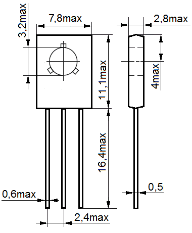

Транзистор КТ961
Транзистор КТ961 (КТ961А, КТ961Б, КТ961В, КТ961Г) кремниевый планарный, структуры n-p-n. Предназначены для применения в усилителях и импульсных устройствах.
Масса транзистора не более 0,8 г.
Тип корпуса: КТ-27-2 (ТО-126).

{kind=link}

Рис. 1 - Размеры транзистора КТ961
Таблица 1
| Тип транзистора |
Iк max, A | Iки max, A | UкэR max, В | Uкб0 max, В | Uэб0 max, В | Рк max(Рк т max), Вт |
|---|---|---|---|---|---|---|
| КТ961А | 1,5 | 2 | 100 | 100 | 5 | 1 (12,5) |
| КТ961Б | 1,5 | 2 | 80 | 80 | 5 | 1 (12,5) |
| КТ961В | 1,5 | 2 | 60 | 60 | 5 | 1 (12,5) |
| КТ961Г | 2 | 3 | 40 | 40 | 5 | 1 (12,5) |
Таблица 2
| Тип транзистора |
h21Э | Uкэ нас, В | Iкбо,мкА | Iэбо,мкА | fгp,МГц | Tп max,°С | Тmax,°С |
|---|---|---|---|---|---|---|---|
| КТ961А | 40…100 | <0,5 | <10 | <100 | >50 | 150 | -45…+85 |
| КТ961Б | 63…160 | <0,5 | <10 | <100 | >50 | 150 | -45…+85 |
| КТ961В | 100…250 | <0,5 | <10 | <100 | >50 | 150 | -45…+85 |
| КТ961Г | 20…500 | <0,5 | <10 | <100 | >50 | 150 | -45…+85 |